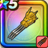

黄竜のツメ
攻略班 7.0点 / ドラゴンネイルしんくうはせいけんづき裂鋼拳龍牙疾風拳※錬成で強化可能
くわしい特徴
【レベル別習得スキル】 Lv1ドラゴンネイル（消費MP：5）ドラゴン系に威力200%それ以外の系統は130%の斬撃ダメージを与える Lv10しんくうは（消費MP：9）体術で大気を切り裂き、敵全体に120%のバギ属性体技ダメージを与える Lv15せいけんづき（消費MP：7）腰を落としてまっすぐ拳で突き、敵1体に威力180%の体技ダメージを与える Lv20裂鋼拳（消費MP：12）マシン系に威力180%、それ以外の系統には120%の斬撃攻撃を2回する Lv30龍牙疾風拳（消費MP：24）龍をかたどる拳圧で敵全体に威力245%のバギ属性体技ダメージを与える Lv35ドラゴン系へのダメージ+5% Lv40ドラゴン系へのダメージ+5% Lv45すばやさ+5 Lv50攻撃力+12錬成スキル改1植物系へのダメージ+10%改2龍牙疾風拳改（消費MP：30）龍をかたどる拳圧で、敵全体に威力275％のバギ属性体技ダメージを与える改3植物系へのダメージ+10%改4錬成ぶき特別演出解放・メガモン討伐結果発表時に特別演出が追加・武器の見た目に特別なエフェクトが追加 【限界突破スキル】 1凸スキルの斬撃・体技ダメージ+5% 2凸スキルの斬撃・体技ダメージ+5% 3凸スキルの斬撃・体技ダメージ+5% 4凸スキルの斬撃・体技ダメージ+5%